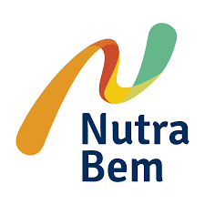

Tecnologia e bem-estar: use eletrônicos para viver melhor;
Melhorar a prática de hábitos saudáveis pode ganhar um reforço com o uso da tecnologia. Onde ela pode ajudar a mudar sua rotina? Você só bebe água quando sente sede, está sempre atrasado? Existem aplicativos e eletrônicos que dão uma forcinha para quem quer se cuidar mais e ganhar qualidade de vida.veja a lista:
1. Echo Show 5 - Amazon

É um produto feito para se adaptar à sua vida: atualiza lista de tarefas, confere a previsão do tempo, monta a lista de compras, faz chamadas de áudio e vídeo, mostra as notícias do dia e mais. Para quem está procurando quem possa organizar demandas e colocar tudo em ordem, acabou de encontrar esse "alguém".
2. Pulseira Smart Mi Band 6 - Xiaomi

É a opção mais vendida na Amazon entre "produtos para corrida", por terpreço acessível, em comparação a outros modelos, e funcionalidades interessantes.Realiza um registro de toda a sua atividade diária, medindo vários itens, como passos dados, distâncias percorridas, calorias consumidas, frequência cardíaca e qualidade do sono.
3. Apple Watch Serie 6 Space Gray - Apple

O relógio está entre os queridinhos de quem curte produtos Apple. Nesta versão, é possível medir o oxigênio no sangue com sensor e aplicativo novos. Entre as funcionalidades disponíveis, emissão de lembretes para colocar em prática pequenas ações: ficar em pé, beber água, respirar de forma concentrada etc. Um dos apps gera um eletrocardiograma e mostrar se o seu ritmo cardíaco tem alterações.
4. Echo Dot 3ª geração - Amazon

Este smart speaker está entre as indicações da Amazon para a categoria e é controlado por voz com a Alexa, que responde perguntas, lê notícias, checa a previsão do tempo, cria alarmes, controla dispositivos de casa inteligente e mais. Possui quatro microfones de longo alcance, o que torna o uso mais prático. Conte com ela para procurar receitas, tirar dúvidas sobre alimentos e até marcar uma consulta médica.
5. Zen

Se você busca autoconhecimento e desenvolvimento pessoal, o Zen pode te ajudar
muito nessa jornada. Nele você encontrará meditações guiadas; mantras para a
saúde, amor, felicidade, sono profundo etc.; acompanhamento do seu status
emocional; informações sobre aiurveda; provérbios e mensagens motivacionais e
muito mais.
Disponível para Android e IOS
6. Happy help

Nada melhor para o bem-estar do que ajudar o próximo. Por meio deste aplicativo você pode trocar ajuda, conhecimento e habilidades que esteja precisando. Além disso, a cada transação você acumula créditos para usar nos parceiros do app. Gostou dessa ideia? Então, baixe e descubra mais recursos.
7. BTFit

O aplicativo desenvolvido pelo grupo de academias Bodytech é recheado de opções
para te deixar em forma. Além das séries criadas para cada tipo de objetivo,
você também pode contar com um personal trainer on-line. Mas se preferir aulas
coletivas, como dança e ioga, tem também.
Disponível para Android e IOS
8. Nutrabem

Criado pela Universidade Federal de São Paulo, o app Nutrabem é um guia para
alcançar a sonhada vida saudável. Elaborado com base nos hábitos alimentares dos
brasileiros, nele você encontra orientações sobre alimentação, cria metas de
perda de peso e pode acompanhar seu desempenho. Baixe e descubra outras funções
muito úteis.
Disponível para Android e IOS